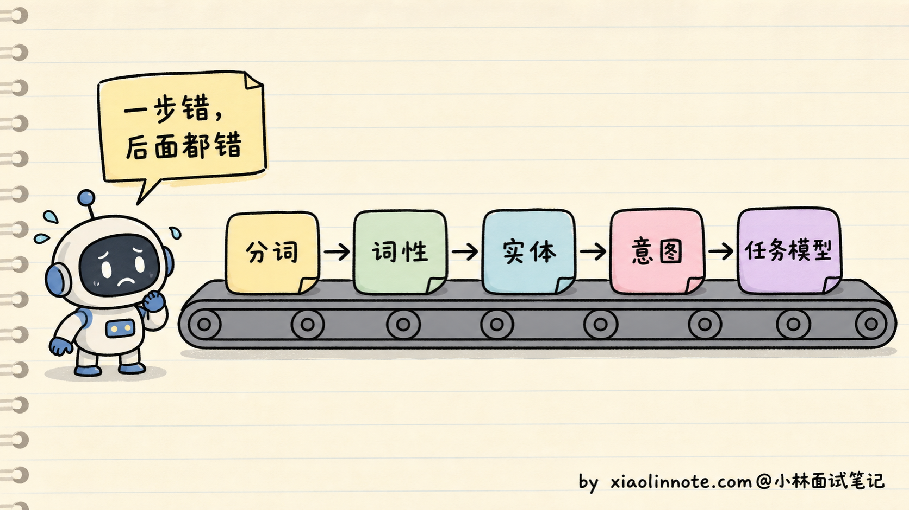
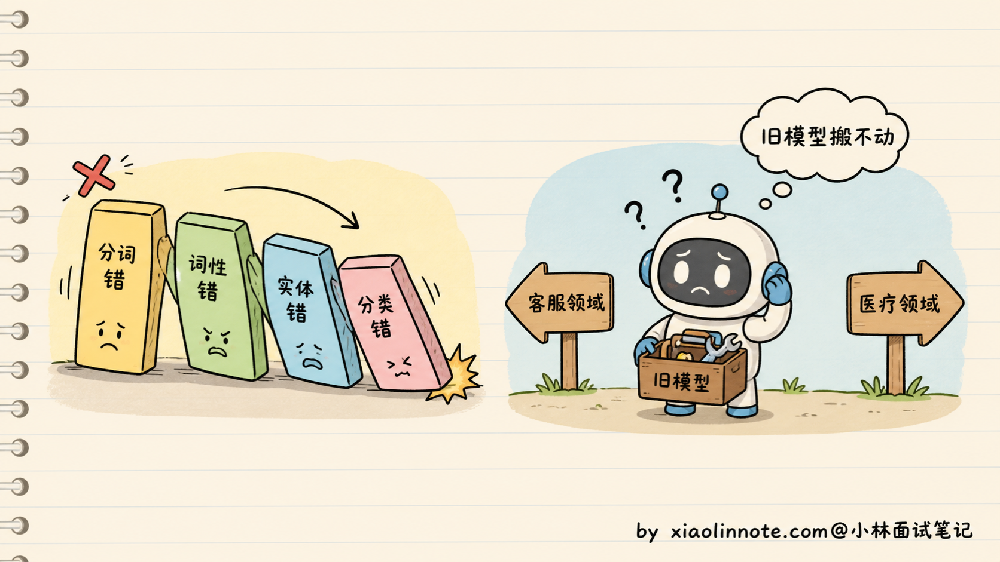
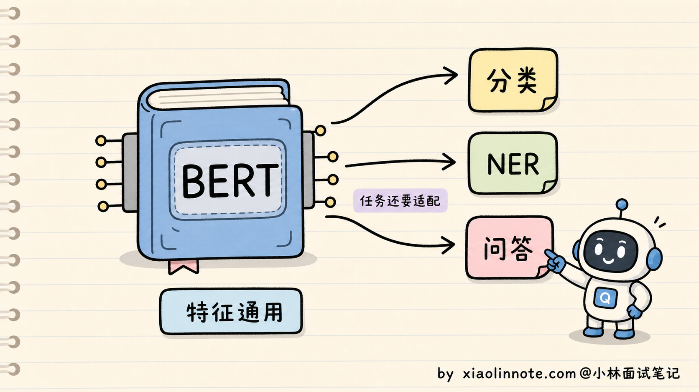
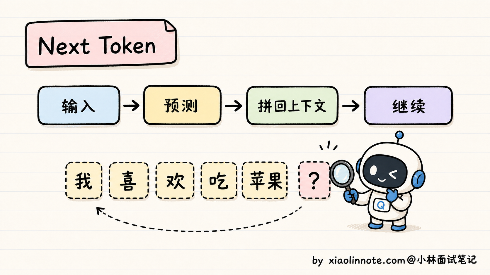
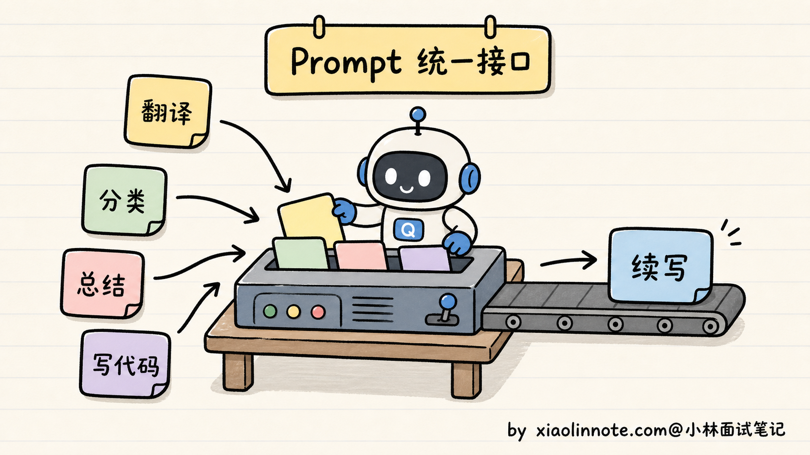
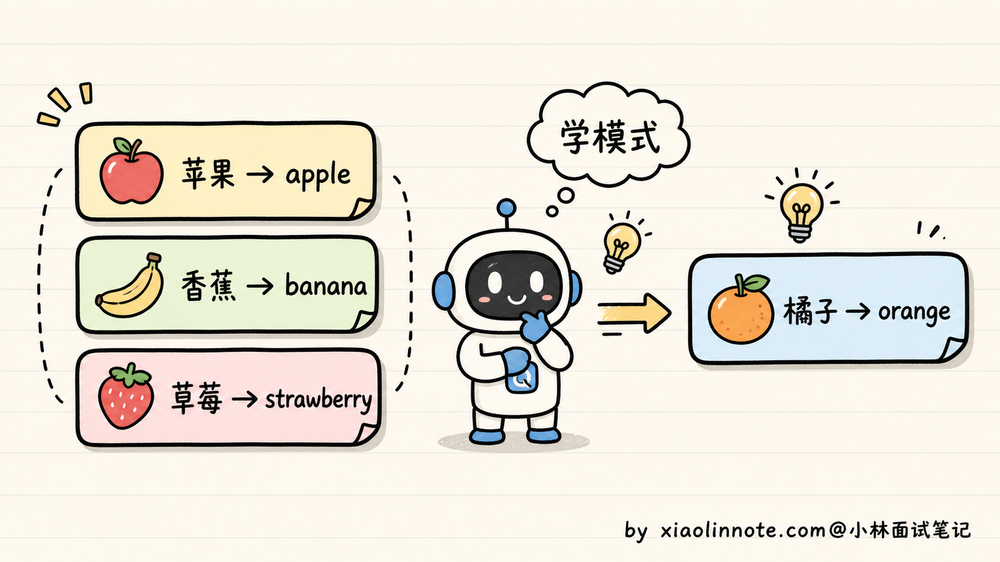
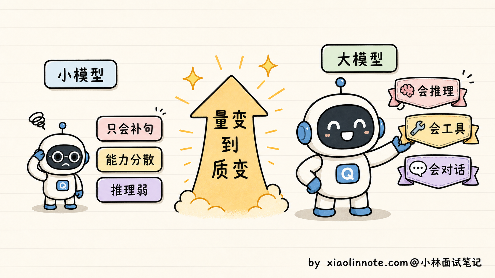
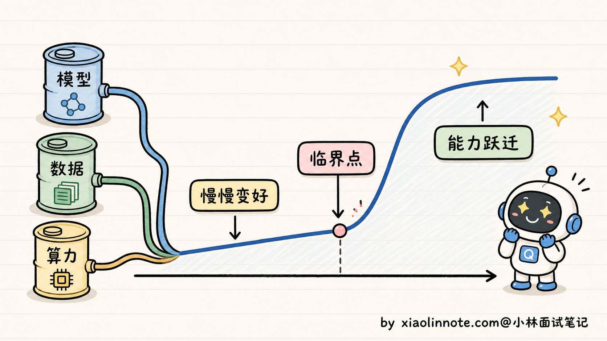
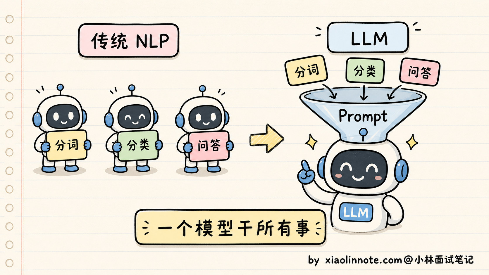
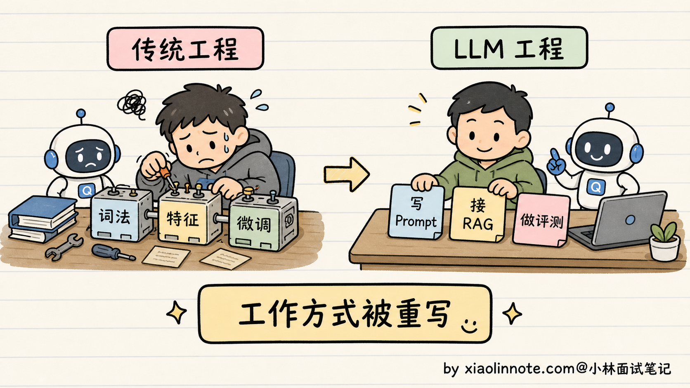

什么是大语言模型？和传统 NLP 模型有什么区别？
👔面试官：来，讲讲什么是大语言模型？它和我们以前用的传统 NLP 模型有什么区别？
🙋♂️我：大语言模型嘛，就是 ChatGPT 那种，参数特别多、能聊天的那个。
👔面试官：……能聊天的就叫大语言模型？那 Siri 也能聊天，它也是大语言模型？「参数多」具体多到什么量级才算「大」？为什么参数多了就能聊天？
🙋♂️我：哦哦，那大语言模型就是参数到亿级别以上、训练数据特别多、能完成各种 NLP 任务的模型。
👔面试官：你说的还是结果，没说本质。BERT 也有几亿参数，那 BERT 是不是大语言模型？传统 NLP 是先分词、再词性标注、再命名实体识别，最后做下游任务，那 LLM 是怎么做的？你能说出本质区别吗？
🙋♂️我：呃……LLM 不分这些步骤，是一个端到端的模型对吧？
👔面试官：「端到端」我们 2015 年就在说了，那时候的 LSTM 也是端到端的，BERT 接个分类头也是端到端的，你这回答放在十年前都不算新东西。讲讲为什么 LLM 能做到「一个模型干所有 NLP 任务」？为什么之前的模型做不到？回去搞清楚再来。
这道开场题答了几轮都没踩到点，看来「LLM 大在哪」「为什么大到一定程度就有质变」这两件事得正儿八经讲一下，要不然后面所有题都没有底座。
💡 简要回答
我理解大语言模型的本质，是一个用海量语料预训练、参数到百亿千亿规模、自回归生成文本的统一模型。
它和传统 NLP 模型最根本的区别有三点。
第一，传统 NLP 是「一任务一模型」，分词、命名实体识别、情感分析、问答各训各的，每个模型只会干自己那点事；LLM 是「一个模型干所有事」，因为它在预训练阶段学的是「预测下一个 token」这件最通用的事，下游任务用 Prompt 表达就行，不用再分别训练。
第二，传统 NLP 模型是判别式的，吃一段文本输出一个标签或概率；LLM 是生成式的，吃一段文本输出更多文本，理解和生成在同一个模型里完成。
第三，也是最神奇的一点，规模到了一定程度，LLM 会「涌现」出训练目标里没有显式教过的能力，比如多步推理、上下文学习、跨语言迁移，这种「量变到质变」的现象在传统 NLP 模型上是看不到的。
📝 详细解析
传统 NLP 是怎么干活的？
要理解 LLM 厉害在哪，得先看看在它之前，业界是怎么处理自然语言任务的。
传统 NLP 的工作方式是「流水线」式的，一个完整任务要拆成好几个独立步骤，每一步用一个专门的模型来完成。这不是大家想这么干，而是当时的小模型能力有限，必须把复杂问题拆解成一个个简单的子问题，每个子问题单独训练一个模型才搞得定。

举个例子，假如你要做一个智能客服。流程大概是：第一步分词，把用户的「我想退货」拆成「我 / 想 / 退货」；第二步词性标注，标出「我」是代词、「退货」是动词；第三步命名实体识别，找出有没有商品名、订单号；第四步意图分类，判断这是「咨询」还是「投诉」；第五步去知识库匹配预设答案。
光是「分词」这一步，里面就有一堆坑。中文不像英文有空格天然分隔，「南京市长江大桥」到底是「南京市/长江大桥」还是「南京/市长/江大桥」？这种歧义靠规则解决不了，必须有一个专门的分词模型来判断。而分词模型本身又依赖大量的人工标注语料，遇到训练时没见过的新词（比如「奥利给」「绝绝子」），它就懵了，这就是著名的 OOV（Out-of-Vocabulary，未登录词） 问题。
每一步都有这种独立的痛点，每一步都得有自己的模型、自己的训练数据、自己的标注规范。整个 pipeline 又长又脆，前面一步错了，后面全错。分词错了，词性标注就错；词性错了，命名实体识别就错；最终的意图分类也跟着错。这种错误是会累积传导的，而且没法事后补救。

更糟糕的是迁移成本。换个领域（比如从客服换成医疗问答），所有模型基本都得重新训练。因为医疗领域的「实体」（药名、症状、检查项目）和电商领域的「实体」（商品、订单、品牌）完全不是一回事，原来训好的模型用不上。一个公司想做几个不同领域的 NLP 应用，等于要养几套独立的模型团队，成本极高。
这就是 LLM 出现之前的世界，任务越细分，模型越多；模型越多，标注成本越高；标注越贵，迁移越难。整个 NLP 行业都被困在这个死循环里走不出来。
BERT 时代：预训练通了一半
到了 2018 年，Google 推出 BERT，整个领域出现了第一次大的转折。BERT 的核心创新是预训练 + 微调两阶段范式。
预训练阶段，BERT 在海量无标注文本（维基百科 + 图书数据，约 33 亿词）上做两件事：第一是 MLM（Masked Language Model，掩码语言模型），随机遮掉句子里 15% 的词，让模型根据上下文猜被遮的词是什么；第二是 NSP（Next Sentence Prediction，下一句预测），给两个句子，让模型判断它们是不是连续的。这两个任务都不需要人工标注，纯靠原始文本就能训练，所以可以用海量数据。
经过预训练，BERT 学到了通用的语言表示能力，简单说就是「看懂文字」的能力。然后到了下游任务，只需要在 BERT 上面接一个小的「任务头」，用少量标注数据微调一下，就能在各种 NLP 任务上拿到很好的效果。这一招直接把 NLP 各项任务的 SOTA（state-of-the-art，最佳表现）刷了个遍，整个领域为之一振。
但 BERT 走到一半就停了。它解决了「特征通用」（一个 BERT 可以服务多个下游任务），但没解决「任务统一」（不同任务还是要不同的微调副本）。原因有两个。
第一，BERT 的输出是「表示」，不是「文本」。它每一层输出的是每个 token 的向量表示，要想拿来做分类，得在最后接一个分类头（全连接 + softmax）；要做命名实体识别，得接一个序列标注头；要做问答，得接一个抽取式 QA 头。每一种任务都需要单独设计的「头」、单独标注的数据、单独训练的过程。一个 BERT 在公司里被用起来，可能要派生出十几个微调副本，每个负责一个具体任务。
第二，BERT 不擅长生成。它的预训练目标 MLM 是「填空题」，每次只猜一个被遮的词，没学过怎么连续生成长文本。所以 BERT 几乎不被用来做翻译、写作、对话这类生成任务。这一块还得交给当时另一条技术路线，比如 GPT-2、T5。换句话说，BERT 把「理解」做到极致，但「生成」是它的短板。

所以 BERT 时代是个很关键的过渡。它证明了「预训练 + 大规模无标注数据」这条路是对的，但还没把所有 NLP 任务收归到同一个接口下。真正完成这一步的，是后来的 GPT 系列。
LLM 的本质：把所有任务收编成「预测下一个 token」
LLM 最根本的转变，是把所有 NLP 任务统一成了一件事，预测下一个 token。
这个训练目标叫 CLM（Causal Language Modeling，因果语言模型）。它的训练数据格式特别简单：给一段文本，模型从左到右一个字一个字地往后猜，每一步都要预测「下一个 token 是什么」。比如训练数据是「我喜欢吃苹果」，模型要学会：看到「我」预测「喜」，看到「我喜」预测「欢」，看到「我喜欢」预测「吃」，依此类推。
这种训练方式叫自回归（Autoregressive），意思是「下一步的预测依赖上一步的输出」。GPT、Claude、Qwen、DeepSeek 这些主流大模型，本质都是「自回归 + 因果掩码」的语言模型。

听起来太简单了对吧？但威力极大。看几个例子就明白了：
- 翻译：Prompt 写「把下面这句翻译成英文：我喜欢你 ->」，LLM 接着预测下一个 token，就会输出「I like you」
- 分类：Prompt 写「下面这条评论是正面还是负面？『这家店太黑了』 -> 答：」，LLM 预测下一个 token 就会输出「负面」
- 总结：Prompt 写「请用一句话总结：xxxxxx -> 总结：」，LLM 接着写下去就是总结
- 写代码：Prompt 写「写一个 Python 函数，返回斐波那契数列前 N 项 -> def」，LLM 接着续写就是完整代码
所有任务都被「Prompt + 续写」这个统一接口收编了。你不需要为每个任务训不同的模型，只需要在 Prompt 里换个说法，一个模型就能切换到不同的工作模式。

那为什么这个简单目标能学到这么多东西？关键是规模 + 数据两个杠杆。
数据的杠杆是：CLM 不需要任何人工标注，互联网上所有文本天然都是合格的训练数据。GPT-3 用了 3000 亿 token，Llama 3 用了 15 万亿 token，这种规模在 BERT 那个时代是不可想象的。BERT 当年的训练数据是几十亿词，现在 LLM 的训练数据规模翻了几千倍。
模型的杠杆是：参数量从 BERT 的 0.3B 一路堆到 GPT-3 的 175B，再到后来更大、更复杂的闭源模型。像 GPT-4 这类模型的具体参数量官方没有公开，外界只能估计，所以面试里最好别把「万亿级」当成确定事实来讲。更稳的说法是：模型规模、训练数据和算力一起放大后，「预测下一个 token」这件事被推向了新的境界。
模型要在不同上下文里准确预测，就必须学到语法、事实和推理模式。比如要预测「北京是中国的_」的下一个词，模型必须知道「北京是首都」这个事实；要预测「如果 x=2，那么 x²=_」，模型必须会算数；要预测一段代码的下一行，模型必须理解编程逻辑。
所有这些能力，都被「预测下一个 token」这个看似简单的目标逼着学会了。这就是为什么 LLM 能用一个统一的训练目标，覆盖几乎所有 NLP 任务。
还有一个让人惊讶的副产物，叫 In-Context Learning（上下文学习）。在 Prompt 里给模型几个例子，模型就能学会新的任务模式，不需要更新参数。比如：
苹果 -> apple
香蕉 -> banana
草莓 -> strawberry
橘子 ->
模型看到这个 Prompt，不需要任何额外训练，就能输出「orange」。它从 Prompt 里几个例子里推出了「中译英水果名」这个模式，然后应用到新的输入上。这种能力是 GPT-3 之后才被业界发现的，也是 Prompt Engineering 这门工程学科诞生的基础。

「涌现能力」：量变到质变的关键
LLM 还有一个让传统 NLP 模型望尘莫及的特点，叫涌现能力（Emergent Abilities）。
涌现的常见定义是：「某项能力在小模型上几乎看不到，规模到了某个临界点之后突然表现出来」。不过这里要留一个 caveat：有研究认为，一部分「突然出现」可能来自评测指标的离散性，比如 exact match 这种非黑即白的指标会把连续提升看成突变。所以面试里可以说「涌现是工程上能观察到的能力跃迁，但学术上对它是不是测量假象还有争议」。
来看几个真实数据。
第一个例子是多步算术。Google 在 2022 年的论文里测试，让模型做需要 5 步计算的应用题。参数量在 8B 以下的模型，准确率几乎是 0；到了 62B 的量级，准确率还是只有 5%；但到了 540B（PaLM）的量级，准确率突然跳到 60%。用 exact match 这类指标看，中间像是没有任何渐进过程，就是从「完全不会」直接到「会一大半」。如果换成更细的部分得分指标，曲线可能会平滑一些，这就是涌现争议的来源。

第二个例子是 In-Context Learning。GPT-3（175B）出现之前，业界的共识是「想让模型学新任务，必须在新任务上微调」。GPT-3 出来之后，OpenAI 发现只要在 Prompt 里给几个例子，模型就能学会新任务，准确率甚至能接近专门微调的小模型。这种能力在 1.5B 的 GPT-2 上完全看不到，在 175B 的 GPT-3 上突然就有了，临界点出现在 100B 左右。
第三个例子是跨语言迁移。GPT-3 主要训练数据是英文（占比 92%），但训练完之后，它能直接处理中文、日文、阿拉伯语，甚至小语种比如冰岛语。模型从来没被显式教过「中文怎么说」，它通过大规模多语言混合语料的预训练，自己学会了不同语言之间的对应关系。

为什么会涌现？业界给出的工程经验叫 Scaling Law（缩放定律）。简单说就是模型规模、训练数据量、训练算力这三者之间存在一种可预测的关系：你把这三个量按一定比例同时放大，模型的损失值（预测错误率）会沿着一条幂律曲线下降。这条经验律 OpenAI 在 2020 年的论文里提出，DeepMind 后来在 Chinchilla 论文里给出了更精细的比例（参数和数据要按 1:20 配，比如 70B 参数最好配 1.4T token）。
涌现的玄妙之处在于，你没有专门教过模型怎么做这些任务，它自己「学会」了。这是「量变到质变」的真正含义，也是为什么这两年所有家底厚的公司都在拼命扩大模型规模。
但要注意的是，涌现不是「越大越好」。最近几年的研究发现，超过某个规模之后，单纯堆参数的边际收益在递减。所以现在的趋势是，参数堆得不一定要最大，但数据要够多、算力要够花。Llama 3 的 8B 模型用 15 万亿 token 训出来，效果反而比早期的 GPT-3 175B 还好，这就是数据规模超过参数规模带来的回报。
三个本质区别总结
到这里，可以把 LLM 和传统 NLP 模型的区别归到一张表：
| 维度 | 传统 NLP | LLM |
|---|---|---|
| 任务方式 | 一任务一模型，pipeline 串联 | 一个模型干所有事，Prompt 统一接口 |
| 输出范式 | 判别式（输出标签/概率） | 生成式（输出文本） |
| 能力来源 | 显式监督训练（喂什么学什么） | 大规模预训练 + 涌现（学到没教过的能力） |
这张表的三行，分别从「工程层面」「范式层面」「能力层面」三个角度刻画了同一个变化的不同侧面。
工程层面的区别是「拼装积木」变成了「统一系统」。这个变化对工程团队的影响特别直观：团队结构不再是「N 个小模型组各管一摊」，而是变成「一个大模型组统一服务全公司」；部署成本也不再是「N 个模型同时上线各自占资源」，而是「一个模型挂上线多个场景复用」；维护方式更不一样了，过去每个小模型各自迭代各自的版本，现在所有应用统一跟着 base model 升级走。
范式层面的变化更深一层，是从「分类器思维」彻底切换到「生成器思维」。在工程实践上的体现是：用户交互方式从「在屏幕上点选项」变成「打字跟模型聊」；产品经理的核心思考问题从「如何穷举所有用户意图」变成「如何写好 Prompt」；评估指标也从过去的「准确率 / 召回率」这种判别式指标，变成「LLM-as-Judge 评分 / 用户满意度」这种生成式指标。这是整个 NLP 行业的工作方式都在被重写。
能力层面的突破最关键，是模型可以做「人没明确教过」的任务。过去想让模型多一项能力，必须为这项能力标注新数据；现在只需要在 Prompt 里描述新需求，模型就有概率能直接做。模型的能力上限不再被人工标注规模锁死，这在整个 NLP 历史上是前所未有的事，也是 LLM 真正颠覆性的地方。

这场转变对工程团队意味着什么
理解了上面三点，就能理解一个现实：这一两年所有 NLP 团队都在拥抱大模型，这不是「又出了一个新模型」，而是整个 NLP 领域的工作方式被重写了。
具体来说，过去做一个 NLP 项目，第一件事是「数据怎么标」，第二件事是「模型选哪个 BERT 变体」，第三件事是「微调怎么调超参」。现在做一个 LLM 项目，第一件事是「Prompt 怎么写」，第二件事是「需不需要 RAG 加外部知识」，第三件事是「要不要做 LoRA 微调」。工程的着力点完全变了，先想 Prompt，再想数据，最后才考虑微调。
过去 NLP 工程师的核心技能是词法分析、句法分析、特征工程、模型调参；现在 LLM 工程师的核心技能是 Prompt Engineering、RAG 系统设计、Agent 编排、对齐微调。听起来像是两个完全不同的工种，事实上也确实是。这也是为什么市面上招聘 JD 里「大模型应用工程师」这个新岗位会冒出来，工资比传统 NLP 工程师高出一截，因为底层的工作方式变了，老技能不够用了。

理解了 LLM 和传统 NLP 的本质区别，再看后续 RAG、Agent、Prompt Engineering 这些话题，会发现它们都不是凭空出现的，而是「一个模型干所有事 + 生成式 + 涌现」这三个特征延伸出来的工程实践。底层范式变了，上面的工具链当然也要跟着重写一遍。
🎯 面试总结
回到开头那段面试，问到「什么是 LLM」，硬背定义肯定不行。最重要的是把它和传统 NLP 的对照讲清楚，因为这是整道题的地基。
回答时可以这样组织：传统 NLP 是流水线，每个任务训一个模型；BERT 时代实现了「预训练 + 微调」但任务还得单独适配；LLM 把所有任务统一成「预测下一个 token」，靠 Prompt 来表达任务，一个模型搞定所有 NLP 工作。这种对照说出来，面试官就知道你不是死记硬背的。
讲完对照之后，记得带一句生成式和判别式的根本不同。判别式是输入文本输出标签，理解和生成是分开的；LLM 是输入文本输出更多文本，理解和生成在同一个模型里完成。这是范式上的根本变化，也是面试官最容易追问的点。
最关键的加分点是「涌现能力」。规模到了一定程度，模型会冒出训练目标里没显式教过的能力（多步推理、上下文学习、跨语言迁移），这是「量变到质变」的真正含义，也是 LLM 区别于传统 NLP 模型的最核心特征。能讲到这里，已经超过大多数候选人了。
如果还想再往上拔一层，可以延伸到工程视角：现在做 NLP 项目，工作方式从「先拆任务再选模型」变成了「先想 Prompt 怎么写」。这种「站在产业视角看技术变化」的回答，会让面试官印象很深。